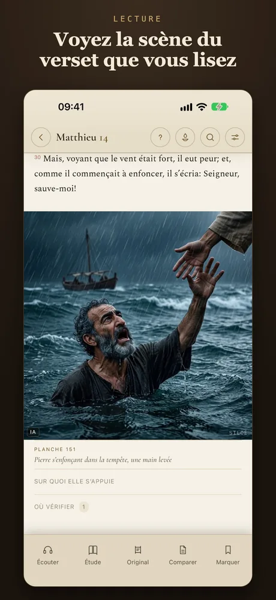
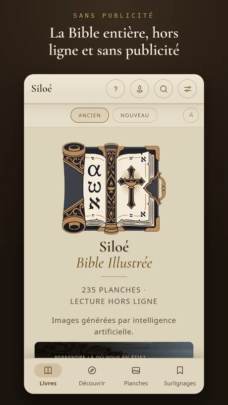
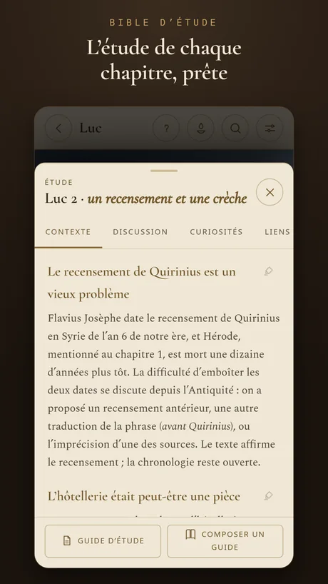
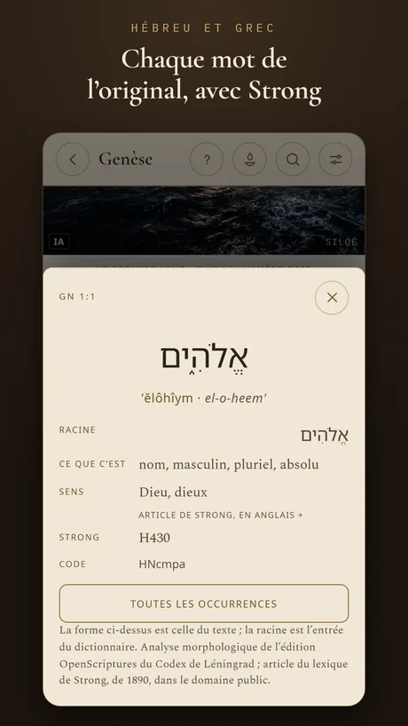
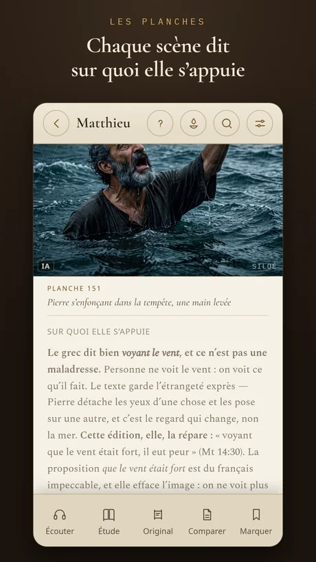
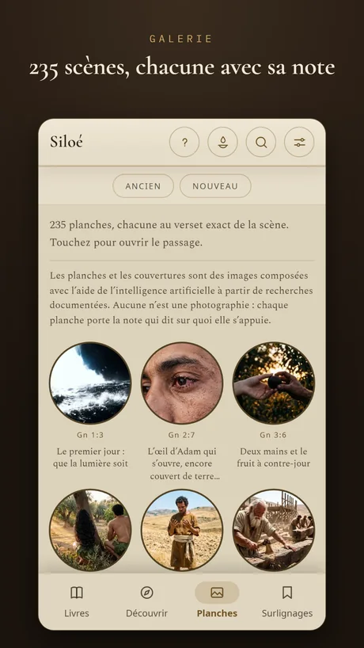
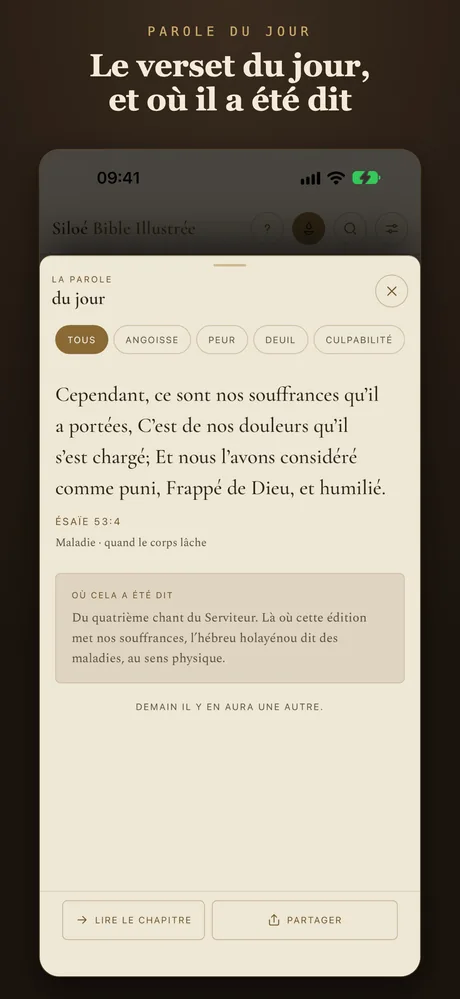
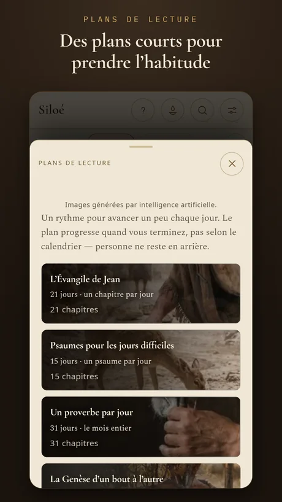

Les planches
Voyez la scène au verset exact.
Il y a 235 planches, et chacune apparaît au verset de la scène qu’elle représente. Vous lisez Matthieu 14 et vous voyez Pierre s’enfoncer dans la tempête, là, à côté du texte.

La Bible à lire, voir, écouter et étudier — du premier verset à l’original hébreu et grec.
Les planches
Il y a 235 planches, et chacune apparaît au verset de la scène qu’elle représente. Vous lisez Matthieu 14 et vous voyez Pierre s’enfoncer dans la tempête, là, à côté du texte.
La note de chaque scène
Chaque planche a une note sur la base du dessin : le verset, la fouille, le texte ancien. Là où la recherche ne soutient pas un détail, la note le dit aussi.

La galerie
Parcourez la Bible par ses images, livre par livre, et par la galerie des personnages. Touchez une scène et Siloé ouvre le passage.

La Bible d’étude
Contexte historique, questions de discussion, curiosités et liens avec d’autres passages, chapitre par chapitre. Et un guide pour votre groupe ou cellule, que vous préparez et emportez en PDF.

Hébreu et grec
Comme dans une Bible interlinéaire : la lecture et le sens de chaque mot, la racine, la morphologie et le numéro Strong. Dans l’édition Chercheur, la concordance montre toutes les occurrences de chaque mot, livre par livre.

La traduction
En portugais, le texte est la Bíblia Livre, traduction brésilienne faite à partir de textes du domaine public — l’Almeida de 1819 et de 1911, le grec de Scrivener et de Nestle et le Codex de Leningrad —, dans ses formes traditionnelle et critique. Chaque langue a sa propre traduction du domaine public ou sous licence libre.

Écoutez la Bible
Siloé lit le chapitre avec la voix de votre téléphone et met en évidence le verset en cours. C’est une narration synthétique, pas l’enregistrement d’un lecteur — et elle fonctionne hors ligne.

La Parole du jour
La Parole du jour est accompagnée d’une note qui raconte qui l’a dite, où et quand. Choisissez par thème — anxiété, peur, deuil — et partagez-la sur une carte.

Plans de lecture
De « Commencez ici » à la Bible en un an, avec un rappel quotidien. L’Évangile de Jean en 21 jours, des Psaumes pour les jours difficiles, un proverbe par jour.

Sur iPad
Sur iPad, les planches prennent de la place et la lecture est confortable comme dans un livre. Surlignages, notes et collections en cinq couleurs, le tout gardé sur votre appareil.

L’édition Gratuite n’expire pas. Illustrée, Complète et Chercheur sont des achats uniques, sans abonnement : chacune contient tout ce que la précédente contient, et passer à l’édition supérieure ne coûte que la différence.
Les écrans de l’application, tels qu’ils apparaissent sur l’App Store.








Vos surlignages, vos notes et ce que vous avez lu restent sur l’appareil ; rien ne part vers un serveur à nous. L’application ne demande pas de compte et n’affiche pas de publicité.
Oui. L’édition Gratuite contient la Bible entière et n’expire pas. Illustrée, Complète et Chercheur sont des achats uniques, sans abonnement ; passer à l’édition supérieure ne coûte que la différence.
Oui. Sur iPhone et iPad, le texte est inclus dans l’application. Internet n’est utilisé que lorsque vous achetez une édition ou ouvrez un lien des notes.
En portugais, la Bíblia Livre, traduction brésilienne faite à partir de textes du domaine public — Almeida de 1819 et de 1911, le grec de Scrivener et de Nestle et le Codex de Leningrad —, dans ses formes traditionnelle et critique. Dans chacune des autres langues, une traduction du domaine public ou sous licence libre.
Non. Siloé contient le canon protestant ; les deutérocanoniques et les ajouts grecs d’Esther et de Daniel ne figurent pas dans cette édition.
En 9 : portugais du Brésil et du Portugal, anglais, espagnol, français, italien, allemand, ukrainien et coréen — la Bible et les menus de l’application. Dans chaque langue, une traduction du domaine public ou sous licence libre.
Non. Ce sont des images composées avec l’aide de l’intelligence artificielle à partir de recherches documentées, et chacune porte la note qui dit sur quoi elle s’appuie. Le texte biblique ne passe pas par l’intelligence artificielle.
Une autre question ? Écrivez à contato@outcomeanalytics.com.br.